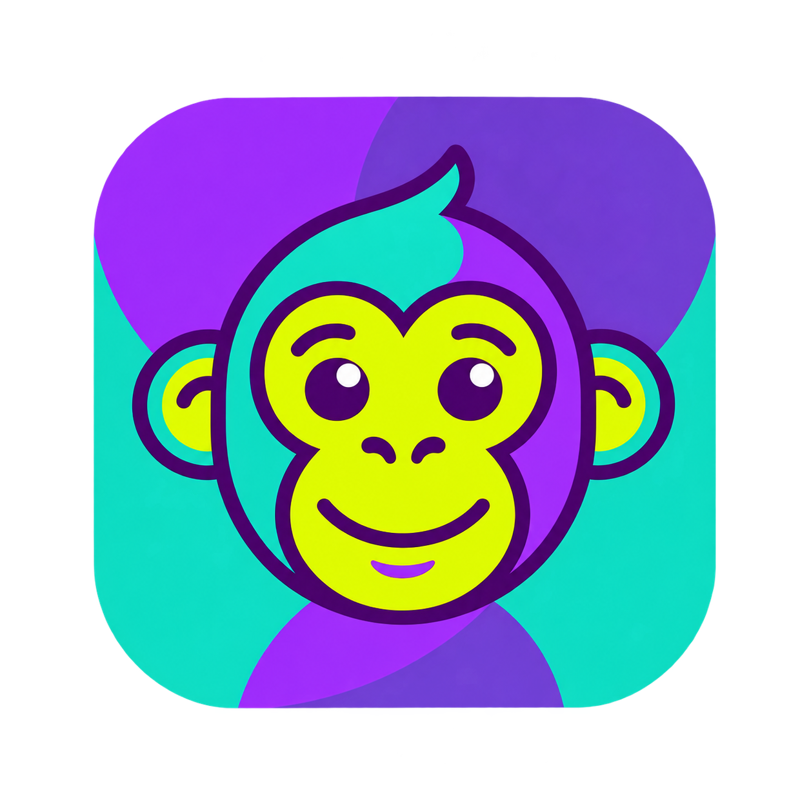

İlk konunu ekleyerek başla.
Modüllerdeki konuların yanındaki yıldıza (★) basarak buraya ekleyebilirsin.
Aramanı veya filtrelerini değiştirmeyi dene.
KONU ÇALIŞMA SAYFASI
Konularını ve notlarını Notion veritabanınla senkronize et.
Yeni bir modül ekle, ardından konularını oluştur.